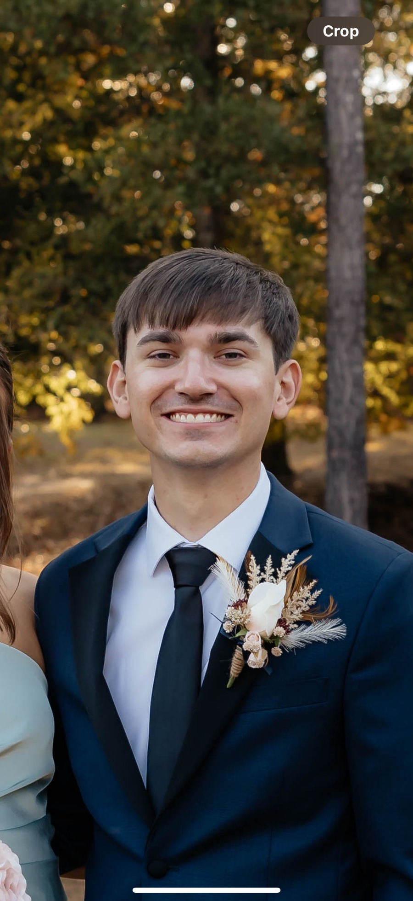

Portfolio
Featured Projects
RS

Hi there, I'm
I'm a software engineer at Idaho Forest Group, where I build automated solutions and HMIs that give operators real-time insight and control over inventory and operations. I hold a B.S. in Computer Science from The University of Southern Mississippi, and I'm open to opportunities where I can make meaningful contributions and keep growing.

Portfolio
My Toolbox